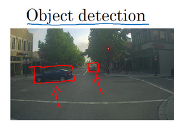
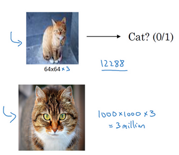

卷积神经网络基础
计算机视觉
计算机视觉是一个飞速发展的一个领域，这多亏了深度学习
深度学习与计算机视觉可以帮助汽车，查明周围的行人和汽车，并帮助汽车避开它们
还使得人脸识别技术变得更加效率和精准，已经能够体验到仅仅通过刷脸就能解锁手机或者门锁
有些公司在应用上使用了深度学习技术来展示最为生动美丽以及最为相关的图片
机器学习甚至还催生了新的艺术类型
深度学习之所以让人兴奋有下面两个原因：
- 计算机视觉的高速发展标志着新型应用产生的可能，这是几年前，人们所不敢想象的。通过学习使用这些工具，你也许能够创造出新的产品和应用
即使到头来未能在计算机视觉上有所建树，但我发现，人们对于计算机视觉的研究是如此富有想象力和创造力，由此衍生出新的神经网络结构与算法，这实际上启发人们去创造出计算机视觉与其他领域的交叉成果
举个例子，之前我在做语音识别的时候，经常从计算机视觉领域中寻找灵感，并将其应用于我的文献当中 所以即使在计算机视觉方面没有做出成果，也希望你也可以将所学的知识应用到其他算法和结构

你可能早就听说过 图片分类 ，或者说 图片识别 。比如给出这张64×64的图片，让计算机去分辨出这是一只猫

在计算机视觉中有个问题叫做 目标检测
比如在一个无人驾驶项目中，不一定非得识别出图片中的物体是车辆，但需要计算出其他车辆的位置，以确保自己能够避开它们
所以在目标检测项目中，首先需要计算出图中有哪些物体，比如汽车，还有图片中的其他东西，
再将它们模拟成一个个盒子，或用一些其他的技术识别出它们在图片中的位置
注意在这个例子中，在一张图片中同时有多个车辆，每辆车相对与你来说都有一个确切的距离

还有一个更有趣的例子，就是神经网络实现的 图片风格迁移
所谓图片风格迁移，就是你有一张满意的图片和一张风格图片
实际上右边这幅画是毕加索的画作，而你可以利用神经网络将它们融合到一起，描绘出一张新的图片
它的整体轮廓来自于左边，却是右边的风格，最后生成下面这张图片
但在应用计算机视觉时要面临一个挑战，就是 数据的输入可能会非常大
举个例子，在过去的课程中，一般操作的都是64×64的小图片
实际上，它的数据量是64×64×3，因为每张图片都有3个颜色通道
如果计算一下的话，可得知数据量为12288，所以特征向量 x 维度为12288
这其实还好，但是64×64真的是很小的一张图片

如果要操作更大的图片，比如一张1000×1000的图片，它足有1兆那么大，但是特征向量 \(x\) 的维度达到了 \(1000 \times 1000 \times 3\) ，因为有 3个 RGB 通道，所以数字将会是300万

这就意味着，特征向量 \(x\) 的维度高达300万。所以在第一隐藏层中，也许会有1000个隐藏单元，而所有的权值组成了矩阵 \(W^{[1]}\) 。如果使用了标准的全连接网络，这个矩阵的大小将会是\(1000 \times 300\) 万。这意味着矩阵会有30亿个参数，这是个非常巨大的数字。在参数如此大量的情况下：
- 难以获得足够的数据来防止神经网络发生过拟合和竞争需求
- 要处理包含30亿参数的神经网络，巨大的内存需求让人不太能接受
但对于计算机视觉应用来说，肯定不想它只处理小图片，希望它同时也要能处理大图
为此，需要进行卷积计算，它是卷积神经网络中非常重要的一块
接下来先用边缘检测的例子来说明卷积的含义